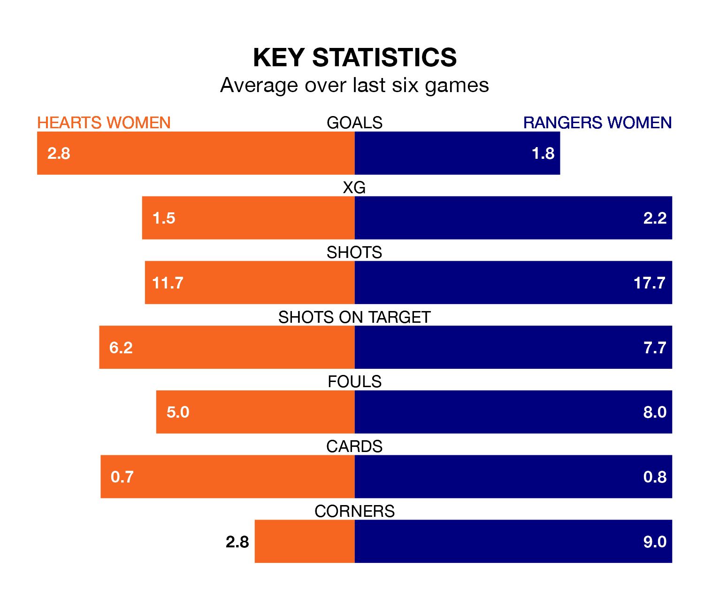

Two of SWPL 1's top sides face each other at Oriam National Performance Centre in Wednesday's late kick-off, when fourth-placed Hearts Women host table-topping Rangers Women.
Hearts have picked up 15 wins and three draws from 25 games so far this season, and sit 18 points below the visitors going into the 7.45pm match.
Rangers, meanwhile, have won 21 and drawn three, picking up 66 points.
With 99 goals in 25 games so far this season, Rangers are the league's second-highest scorers with 4.0 goals per game. And they are conceding fewer than average, letting in 14 goals at a rate of 0.6 per game.
Hearts are also above average scorers, with 2.5 goals per game, compared to a league average of 2.1. They have conceded 1.0 goal per game.
With Jenna Fife between the sticks, the away team can rely on one of the league's safest pair of hands. She has kept 10 clean sheets in her 21 appearances this season, and no 'keeper has prevented the opposition scoring more often in SWPL 1.
In the hosts' net, Charlotte Parker-Smith has eight clean sheets in 21 games. She has conceded a goal every 90 minutes, 80% more often than the 158 minutes between goals for Fife.
In the last 10 years, Hearts and Rangers have played each other on 13 occasions. Rangers won 11 of them and they drew twice.
On average, Hearts scored 0.3 goals and Rangers 3.5 in those matches.
Their last meeting was on February 7, when Rangers won 1-0 at home.
Hearts are in fantastic form in SWPL 1, with five wins and one loss from their last six games.
With three wins and two draws over that period, Rangers's form is worse – they have taken 11 points from 18, compared to Hearts's 15.
Hearts's last match was on Friday, a 2-0 win against Hibernian Women, with Kathleen Mary McGovern and Megan Bell getting the goals for Hearts.
Rangers beat Glasgow City Women 4-1 last time out, on Sunday, with Chelsea Cornet, Elizabeth Arnott, Mia McAulay and Rio Hardy on the scoresheet.
Updated: 11:31 (UTC), 15/04/24